X1001–X1069¶
Classical Midpoints, Euler Intercepts & Cevapoints
Midpoints of classical centers, Euler line intercepts, collinearity intersections, cevapoints, and pure-angle trilinear centers.
X1001–X1069 (Classical Midpoints, Euler Intercepts & Cevapoints) — 16 representative centers (from 69 in collection) constructed on acute reference triangle \((a, b, c) = (5, 6, 7)\) with unit baseline AB = \(1\).¶
X1001MIDPOINT OF X1 AND X9
Let A* be the tangency point of OA and the circumcircle, and define B* and C* cyclically. Let A** be the radical trace of OB and OC. The lines A*A**, B*B**, C*C** concur in X1001.
X1002ISOGONAL CONJUGATE OF X1001
X1002 is the isogonal conjugate of X1001.
X1003INTERCEPT OF EULER LINE AND LINE X6X_99
X1003 = crossdifference of every pair of points on line X647X888
X1004INTERCEPT OF EULER LINE AND LINE X7X_100
As a point on the Euler line, X1004 has Shinagawa coefficients \(((E+F)S^{2}-\$abS_{A}S_{B}\$, -(E+F)S^{2} +\$ab\$S^{2})\).
X1005INTERCEPT OF EULER LINE AND LINE X9X_100
X1005 = isogonal conjugate of X1242
X1006INTERCEPT OF EULER LINE AND LINEX(9)X48
X1006 = isogonal conjugate of X1243
X1007INTERCEPT OF LINES X2X_6 AND X4X_99
X1007 = isotomic conjugate of X7612
X1008INTERCEPT OF EULER LINE AND LINE X1X_76
X1008 = anticomplement of X37148
X1009INTERCEPT OF EULER LINE AND LINE X1X_39
X1009 = crossdifference of every pair of points on line X647X659
X1010INTERCEPT OF EULER LINE AND LINE X1X_75
X1010 = crossdifference of every pair of points on line X647X798
X1011INTERCEPT OF EULER LINE AND LINE X6X_31
X1011 = crossdifference of every pair of points on line X514X647
X1012INTERCEPT OF EULER LINE AND LINE X1X_84
X1012 = center of circle {X1,X1709,PU(4)}
X1013INTERCEPT OF EULER LINE AND LINE X7X_108
As a point on the Euler line, X1013 has Shinagawa coefficients \((\$aS_{A}\$F, \$aS_{B}S_{C}\$)\).
X1014ISOGONAL CONJUGATE OF X210
X1014 is the isogonal conjugate of X210.
X1015EXSIMILICENTER OF MOSES CIRCLE AND INCIRCLE
The circle having center X39 and radius 2R \(\sin^{2}\)ω, where R denotes the circumradius of triangle ABC, is here introduced as the Moses circle. It is tangent to the nine-point circle at X115, and its internal and external centers of similitude with the incircle are X1500 and X1015, respectively. (based on notes from Peter J. C. Moses, 5/29/03)
X1016-CROSS CONJUGATE OF X99
X1016 = isogonal conjugate of X1015
X1017POINT ALFIRK
X1017 = crosssum of X2 and X903
X1018-CROSS CONJUGATE OF X1
X1018 = isogonal conjugate of X1019
X1019-CEVA CONJUGATE OF X1
X1019 = isogonal conjugate of X1018
X1020POINT ALGEDI
X1020 = crosssum of X650 and X652
X1021ISOGONAL CONJUGATE OF X1020
X1021 is the isogonal conjugate of X1020.
X1022INTERSECTION OF LINES X1X_513 AND X2X_514
X1022 = crossdifference of every pair of points on line X44X678
X1023INTERSECTION OF LINES X1X_6 AND X100X_101
X1023 = crossdifference of every pair of points on line X244X513
X1024INTERSECTION OF LINES X6X_513 ANDX(9)X522
X1024 = crossdifference of every pair of points on line X241X518
X1025INTERSECTION OF LINES X2X_7 AND X100X_109
X1025 = trilinear pole of line X241X518

X1026INTERSECTION OF LINES X1X_2 AND X100X_101
X1026 = crosssum of X513 and X659

X1027INTERSECTION OF LINES X1X_514 AND X6X_513
X1027 = crossdifference of every pair of points on line X518X672
X1028POINT ALGENIB
X1028 = isogonal conjugate of X1085
X1029CYCLOCEVIAN CONJUGATE OF X1
X1029 = isogonal conjugate of X1030
X1030ISOGONAL CONJUGATE OF X1029
X1030 is the isogonal conjugate of X1029.
X1031CYCLOCEVIAN CONJUGATE OF X6
X1031 = X83-cross conjugate of X2
X1032CYCLOCEVIAN CONJUGATE OF X20
X1032 = isogonal conjugate of X1033
X1033-CEVA CONJUGATE OF X25
X1033 = isogonal conjugate of X1032
X1034-CROSS CONJUGATE OF X8
X1034 = isogonal conjugate of X1035
X1035ISOGONAL CONJUGATE OF X1034
X1035 is the isogonal conjugate of X1034.
X1036ISOGONAL CONJUGATE OF X388
X1036 is the isogonal conjugate of X388.
X1037CEVAPOINT OF X55 AND X56
X1037 is the cevapoint of X55 and X56.
X1038INTERSECTION OF LINES X1X_3 AND X2X_34
X1038 = homothetic center of 6th anti-mixtilinear triangle and anti-tangential midarc triangle
X1039ISOGONAL CONJUGATE OF X1038
X1039 is the isogonal conjugate of X1038.
X1040INTERSECTION OF LINES X1X_3 AND X2X_33
X1040 = crosssum of X33 and X34
X1041ISOGONAL CONJUGATE OF X1040
The trilinear polar of X1041 passes through X650.
X1042CROSSPOINT OF X1 AND X64
X1042 is the crosspoint of X1 and X64.
X1043CEVAPOINT OF X1 AND X20
X1043 is the cevapoint of X1 and X20.
X1044-CEVA CONJUGATE OF X1
X1044 = X64-Ceva conjugate of X1
X1045-CEVA CONJUGATE OF X1
X1045 = X42-Ceva conjugate of X1
X1046-CEVA CONJUGATE OF X1
X1046 = X65-Ceva conjugate of X1
X1047-CEVA CONJUGATE OF X1
X1047 = X73-Ceva conjugate of X1
X1049TRILINEAR PURE ANGLES CENTER
X1049 = isogonal conjugate of X1077
X1052-CEVA CONJUGATE OF X1
X1052 = X244-Ceva conjugate of X1
X10546th SHARYGIN POINT
X1054 = reflection of X1 in X106
X1055POINT ALIOTH
X1055 = crosssum of X2 and X527
X1056POINT ALCYONE
X1056 = mixtilinear-excentral-to-mixtilinear-incentral similarity image of X4
X1057ISOGONAL CONJUGATE OF X1056
X1057 is the isogonal conjugate of X1056.
X1058POINT ALKALUROPS
X1058 = isogonal conjugate of X1059
X1059ISOGONAL CONJUGATE OF X1058
X1059 is the isogonal conjugate of X1058.
X1060INTERSECTION OF LINES X1X_3 AND X5X_34
X1060 = homothetic center of 2nd Euler triangle and anti-tangential midarc triangle
X1061ISOGONAL CONJUGATE OF X1060
X1061 is the isogonal conjugate of X1060.
X1062INTERSECTION OF LINES X1X_3 AND X5X_33
X1062 = homothetic center of intangents triangle and 2nd Euler triangle
X1063ISOGONAL CONJUGATE OF X1062
X1063 is the isogonal conjugate of X1062.
X1064INTERSECTION OF LINES X1X_4 AND X3X_31
X1064 = isogonal conjugate of X1065
X1065ISOGONAL CONJUGATE OF X1064
X1065 is the isogonal conjugate of X1064.
X1066HASTINGS POINT
X1066 = isogonal conjugate of X1067
X1067ISOGONAL CONJUGATE OF X1066
X1067 is the isogonal conjugate of X1066.
X1068-CROSS CONJUGATE OF X4
X1068 = isogonal conjugate of X1069
X1069-CROSS CONJUGATE OF X3
X1069 = isogonal conjugate of X1068